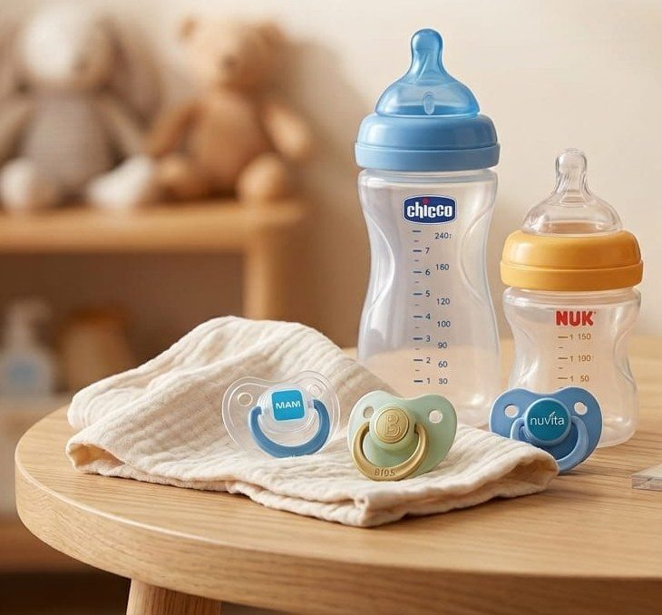
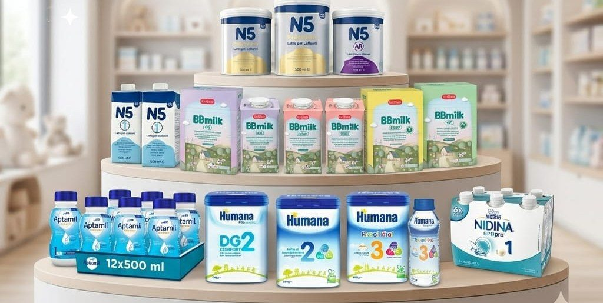
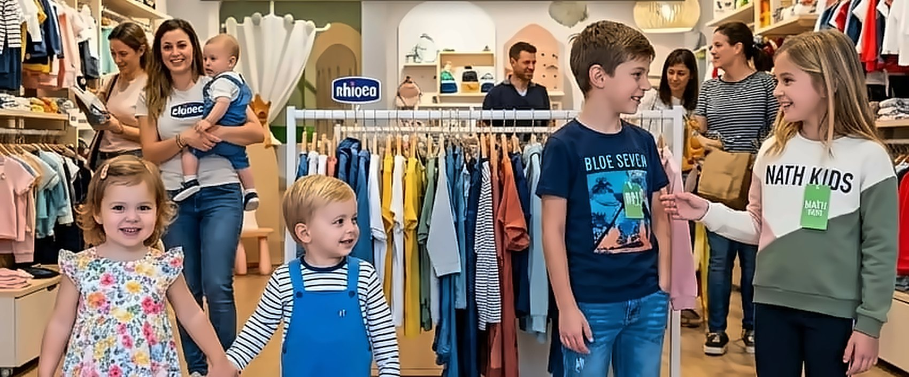

Tutto per il tuo bambino, da 0 a 16 anni.
Latte e alimentazione, pannolini, sanitari, dietetici per bambini, puericultura, abbigliamento e auto elettriche delle migliori marche. Vieni a trovarci o ordina con un messaggio: lo prepariamo noi.

Cosa trovi da noi
Tocca una categoria per scoprirla o per chiederci subito la disponibilità.
Latte e alimentazione
Latte in polvere e liquido, pappe, omogeneizzati.
Pannolini e igiene
Pannolini, salviette, creme e detergenti delicati.
Sanitari
Termometri, aerosol, aspiratori nasali e primo soccorso.
Dietetici per bambini
Alimenti dietetici pensati per i più piccoli.
Passeggini e puericultura
Passeggini, seggiolini auto, biberon e ciucci.
Abbigliamento 0–16
Le collezioni di stagione per bimbi e ragazzi.
Giocattoli e auto elettriche
Auto elettriche radiocomandate e giochi grandi, anche su prenotazione.

Il latte del tuo bimbo, sempre pronto quando passi.
Humana, Aptamil, BBmilk, Nidina e altre marche. Ordinalo in anticipo e lo trovi già preparato in negozio.
Piccoli stili per ogni stagione
Le nuove collezioni di Chicco, Blue Seven, Tuc Tuc e Nath Kids, dalla nascita ai 16 anni.
Chiedi le novità su WhatsApp
Auto elettriche per bambini, con radiocomando
Auto e moto elettriche su cui i bimbi salgono e guidano, con radiocomando per mamma e papà. E poi tanti giochi grandi per casa e giardino.
Il modello che cerchi non c'è? Lo ordiniamo per te e arriva entro 20 giorni.
Le marche che trovi in negozio
Un punto di riferimento per tanti genitori
“In questo negozio ho trovato tutto ciò di cui avevo bisogno per i miei figli… Dal cibo all'abbigliamento per bambini da 0 a 16 anni, dai giocattoli ai detersivi. I proprietari, Marcello e Sonia, marito e moglie, sono gentili, disponibili e competenti. Possono consigliarvi su ogni acquisto. Prezzi competitivi, anche sulle marche più famose. Ampio parcheggio esterno. Un punto di riferimento per molti genitori.”
“Negozio ben fornito in un punto strategico con un buon parcheggio. Consigliato.”
“Locale molto fornito, ampio parcheggio, gentilezza ed esperienza: non manca proprio nulla, o quasi… forse qualche prezzo andrebbe rivisto al ribasso. Farsi un giro è sempre buona cosa.”
Hai una domanda?
Posso prenotare il latte?
Sì. Chiamaci o scrivici su WhatsApp indicando marca e formato: ti avvisiamo quando è pronto e passi a ritirarlo in negozio.
Le auto elettriche si possono vedere in negozio?
Sì, puoi vederle dal vivo in negozio (non è possibile provarle). Il montaggio è sempre incluso.
E se il modello che voglio non è disponibile?
Lo ordiniamo per te e arriva entro 20 giorni. Puoi prenotarlo in negozio o su WhatsApp.
Fate confezioni regalo e buoni regalo?
Sì, prepariamo confezioni regalo e puoi acquistare buoni regalo da usare in negozio.
Accettate il bonus bebè?
Sì, accettiamo il bonus bebè. Non accettiamo invece il bonus latte.
Si può pagare a rate?
No, al momento non è previsto il pagamento a rate.
Non trovi la risposta? Scrivici su WhatsApp
Vieni a trovarci
83020 Santa Lucia di Serino (AV)
| Lunedì | 9:00–13:00 · 16:00–20:00 |
| Martedì | 9:00–13:00 · 16:00–20:00 |
| Mercoledì | 9:00–13:00 · 16:00–20:00 |
| Giovedì | 9:00–13:00 · 16:00–20:00 |
| Venerdì | 9:00–13:00 · 16:00–20:00 |
| Sabato | 9:00–13:00 · 16:00–20:00 |
| Domenica e festivi | Chiuso |